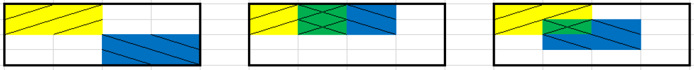

9 Independence
Example 9.1 Consider the following hypothetical data.
| Democrat (\(D\)) | Not Democrat (\(D^c\)) | Total | |
|---|---|---|---|
| Loves puppies (\(L\)) | 180 | 270 | 450 |
| Does not love puppies (\(L^c\)) | 20 | 30 | 50 |
| Total | 200 | 300 | 500 |
Suppose a person is randomly selected from this group. Consider the events \[\begin{align*} L & = \{\text{person loves puppies}\}\\ D & = \{\text{person is a Democrat}\} \end{align*}\]
- Compute and interpret \(\text{P}(L)\).
- Compute and interpret \(\text{P}(L|D)\).
- Compute and interpret \(\text{P}(L|D^c)\).
- What do you notice about \(\text{P}(L)\), \(\text{P}(L|D)\), and \(\text{P}(L|D^c)\)?
- Compute and interpret \(\text{P}(D)\).
- Compute and interpret \(\text{P}(D|L)\).
- Compute and interpret \(\text{P}(D|L^c)\).
- What do you notice about \(\text{P}(D)\), \(\text{P}(D|L)\), and \(\text{P}(D|L^c)\)?
- Compute and interpret \(\text{P}(D \cap L)\).
- What is the relationship between \(\text{P}(D \cap L\)) and \(\text{P}(D)\) and \(\text{P}(L)\)?
- When randomly selecting a person from this particular group, would you say that events \(D\) and \(L\) are independent? Why?
- Events \(A\) and \(B\) are independent if the knowing whether or not one occurs does not change the probability of the other.
- For events \(A\) and \(B\) (with \(0<\text{P}(A)<1\) and \(0<\text{P}(B)<1\)) the following are equivalent. That is, if one is true then they all are true; if one is false, then they all are false.
\[\begin{align*} \text{$A$ and $B$} & \text{ are independent}\\ \text{P}(A \cap B) & = \text{P}(A)\text{P}(B)\\ \text{P}(A^c \cap B) & = \text{P}(A^c)\text{P}(B)\\ \text{P}(A \cap B^c) & = \text{P}(A)\text{P}(B^c)\\ \text{P}(A^c \cap B^c) & = \text{P}(A^c)\text{P}(B^c)\\ \text{P}(A|B) & = \text{P}(A)\\ \text{P}(A|B) & = \text{P}(A|B^c)\\ \text{P}(B|A) & = \text{P}(B)\\ \text{P}(B|A) & = \text{P}(B|A^c) \end{align*}\]
Example 9.2 Each of the three Venn diagrams below represents a sample space with 16 equally likely outcomes. Let \(A\) be the yellow / event, \(B\) the blue \ event, and their intersection \(A\cap B\) the green \(\times\) event. Suppose that areas represent probabilities, so that for example \(\text{P}(A) = 4/16\).
In which of the scenarios are events \(A\) and \(B\) independent?
- Do not confuse “disjoint” with “independent”.
- Disjoint means two events do not “overlap”. Independence means two events “overlap in just the right way”.
- You can pretty much forget “disjoint” exists; you will naturally apply the addition rule for disjoint events correctly without even thinking about it.
- Independence is much more important and useful, but also requires more care.
Example 9.3 Roll two fair six-sided dice, one green and one gold. There are 36 total possible outcomes (roll on green, roll on gold), all equally likely. Consider the event \(E=\{\text{the green die lands on 1}\}\). Answer the following questions by computing and comparing appropriate probabilities.
- Consider \(A=\{\text{the gold die lands on 6}\}\). Are \(A\) and \(E\) independent?
- Consider \(B=\{\text{the sum of the dice is 2}\}\). Are \(B\) and \(E\) independent?
- Consider \(C=\{\text{the sum of the dice is 7}\}\). Are \(C\) and \(E\) independent?
- Independence concerns whether or not the occurrence of one event affects the probability of the other.
- Given two events it is not always obvious whether or not they are independent.
- Independence depends on the underlying probability measure. Events that are independent under one probability measure might not be independent under another.
- Independence is often assumed. Whether or not independence is a valid assumption depends on the underlying random phenomenon.
Example 9.4 You have just been elected president (congratulations!) and you need to choose one of four people to sing the national anthem at your inauguration: Alicia, Ariana, Beyonce, or Billie. You write their names on some cards — each name on possibly a different number of cards — shuffle the cards, and draw one. Let \(A\) be the event that either Alicia or Ariana is selected, and \(B\) be the event that either Alicia or Beyonce is selected.
The following questions ask you to specify probability models satisfying different conditions. You can specify the model by identifying how many cards each person’s name is written on. For each model, find the probabilities of \(A\), \(B\), and \(A\cap B\), and verify whether or not events \(A\) and \(B\) are independent according to the model.
- Specify a probability model according to which the events \(A\) and \(B\) are independent.
- Specify a different probability model according to which the events \(A\) and \(B\) are independent.
- Specify a probability model according to which the events \(A\) and \(B\) are not independent.
Example 9.5 Flip a fair coin twice. Let
- \(A\) be the event that the first flip lands on heads
- \(B\) be the event that the second flip lands on heads,
- \(C\) be the event that both flips land on the same side.
- Are the two events \(A\) and \(B\) independent?
- Are the two events \(A\) and \(C\) independent?
- Are the two events \(B\) and \(C\) independent?
- Are the three events \(A\), \(B\), and \(C\) independent?
- Events \(A_1, A_2, A_3, \ldots\) are independent if:
- any pair of events \(A_i, A_j, (i \neq j)\) satisfies \(\text{P}(A_i\cap A_j)=\text{P}(A_i)\text{P}(A_j)\),
- and any triple of events \(A_i, A_j, A_k\) (distinct \(i,j,k\)) satisfies \(\text{P}(A_i\cap A_j\cap A_k)=\text{P}(A_i)\text{P}(A_j)\text{P}(A_k)\),
- and any quadruple of events satisfies \(\text{P}(A_i\cap A_j\cap A_k \cap A_m)=\text{P}(A_i)\text{P}(A_j)\text{P}(A_k)\text{P}(A_m)\),
- and so on.
- Intuitively, a collection of events is independent if knowing whether or not any combination of the events in the collection occur does not change the probability of any other event in the collection.
Example 9.6 A certain system consists of four identical components. Suppose that the probability that any particular component fails is 0.1, and failures of the components occur independently of each other. Find the probability that the system fails if:
- The components are connected in parallel: the system fails only if all of the components fail.
- The components are connected in series: the system fails whenever at least one of the components fails.
- Donny Don’t says the answer to the previous part is \(0.1 + 0.1 + 0.1 + 0.1 = 0.4\). Explain the error in Donny’s reasoning.
- When events are independent, the multiplication rule simplifies greatly. \[ \text{P}(A_1 \cap A_2 \cap A_3 \cap \cdots \cap A_n) = \text{P}(A_1)\text{P}(A_2)\text{P}(A_3)\cdots\text{P}(A_n) \quad \text{if $A_1, A_2, A_3, \ldots, A_n$ are independent} \]
- When a problem involves independence, you will want to take advantage of it. Work with “and” events whenever possible in order to use the multiplication rule.
- For example, for problems involving “at least one” (an “or” event) take the complement to obtain “none” (an “and” event).